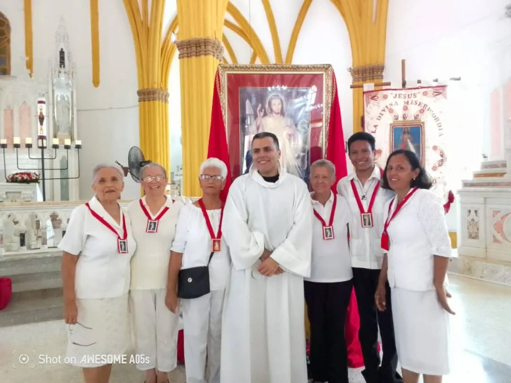

"Jesús, en Ti confío"
Nuestra Sociedad tiene la misión de propagar el mensaje de amor misericordioso que Jesús reveló a Santa Faustina Kowalska para nuestro tiempo.
Nos unimos en oración y acción para implorar la misericordia divina sobre nuestra parroquia, nuestras familias y el mundo entero, reconociendo que Dios nunca se cansa de perdonar y sanar.

La espiritualidad de la Divina Misericordia se basa en la confianza total en Jesús y la práctica de las obras de misericordia corporales y espirituales. Nos comprometemos a orar la Coronilla de la Divina Misericordia y a recordar con especial devoción la "Hora de la Gran Misericordia", las tres de la tarde, cuando Jesús murió por nosotros.
Si deseas unirte a nuestra Sociedad para orar, propagar el mensaje o realizar obras de caridad en nuestra comunidad de Santa Lucía, contáctanos.
Únete a la Sociedad →